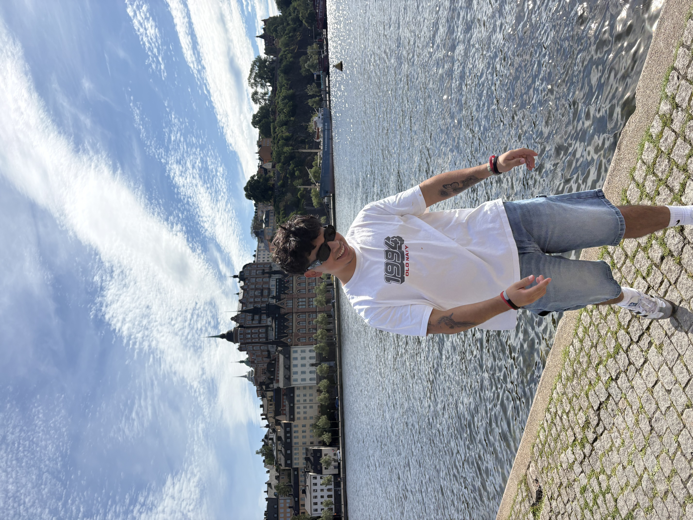

About
Curious about the systems underneath the experience.
My path into computer science has been shaped by the people around the code: mentors who made difficult ideas feel reachable, teammates who turned prototypes into research tools, and students who needed a place to ask early questions without feeling out of place.
At Temple, I am drawn to the layer where product experience meets infrastructure. I like building Python tools, TypeScript systems, APIs, telemetry, CI workflows, and interfaces that do their job without making the user think about the machinery behind them.
The problems I want to work on are practical and human: software that helps people learn, tools that make developers more capable, and backend systems that stay dependable when real users start leaning on them.
Outside the editor
Programming
I like building practical tools, learning how systems fit together, and turning rough ideas into software that feels smooth in someone else's hands.

Building instrumentation and studies for programmer-LLM interaction.
Validation, APIs, persistence, CI, and the reliability details around growth.
Making CS communities feel usable for students finding their footing.